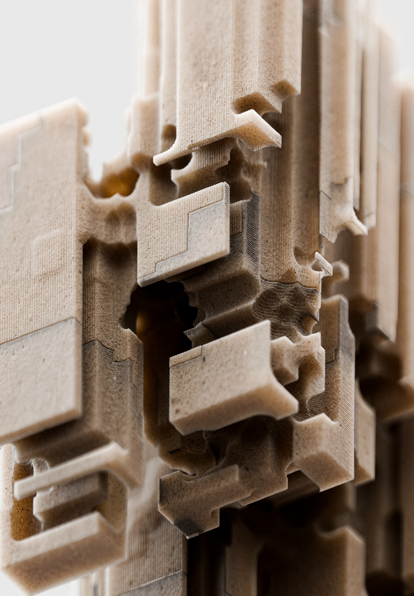
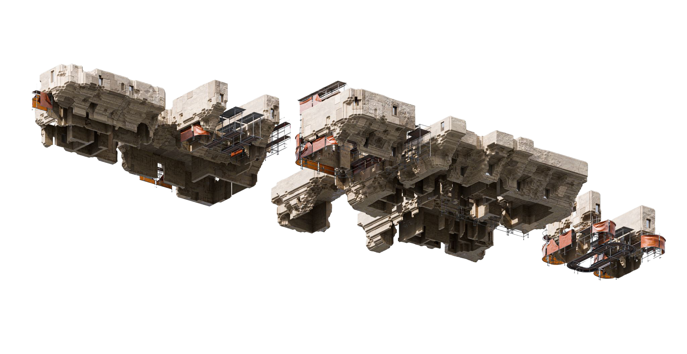
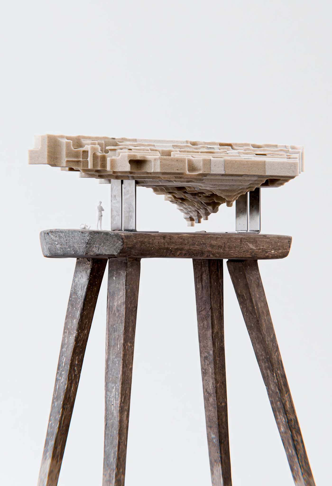
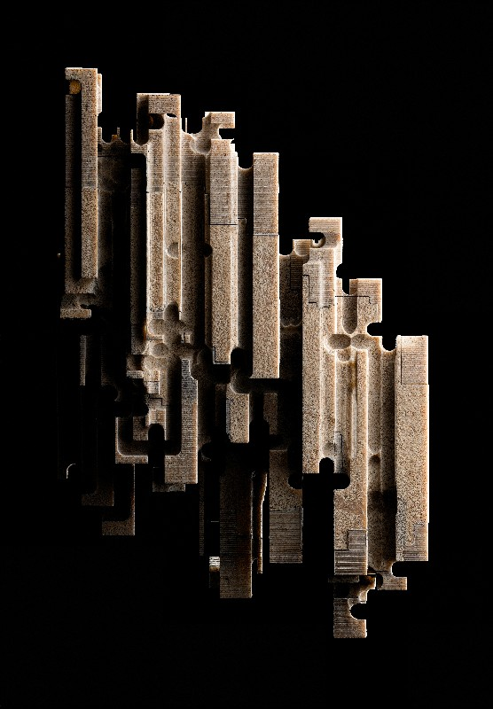
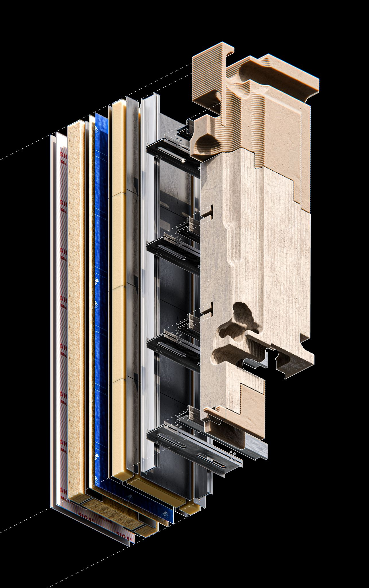
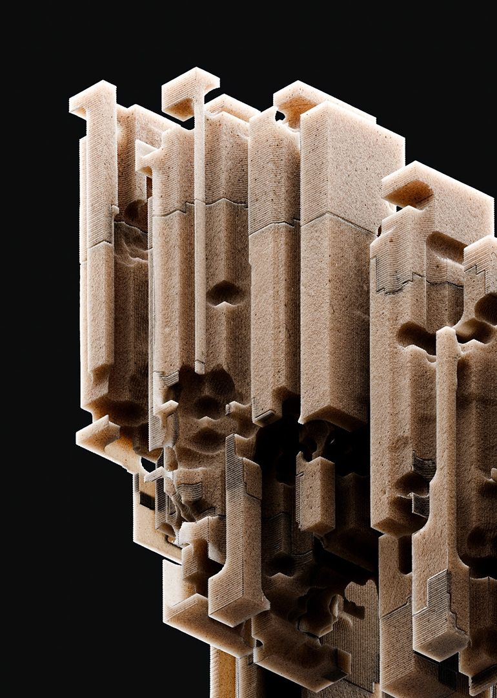
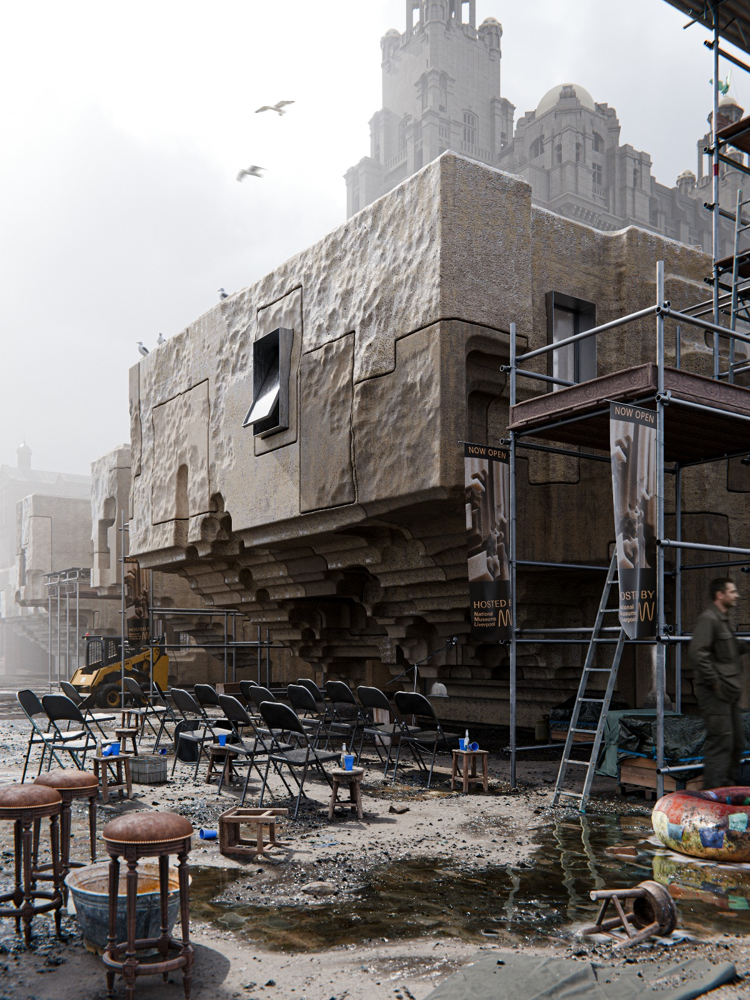

This experience is designed for desktop. Visit us on a larger screen.
This project proposes a new architectural typology for Liverpool's waterfront — a cultural building that reads not as an object placed on site, but as a geological event. The form is stratified, layered, eroded — as though the city's sandstone bedrock had been extruded upward and hollowed out to receive public life.


The physical model is CNC-milled from sandstone composite and mounted on a raw timber stool. A single white figure stands beneath the cantilevered mass — the human body as unit of measure, dwarfed by the architecture it inhabits.


The facade reads as a series of vertical fins — each one subtracted from the mass rather than applied to it. The logic is subtractive, not additive. This is architecture as excavation: rooms found, not built.



